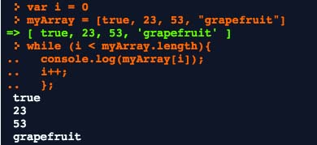
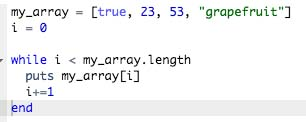
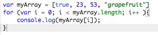
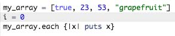

Ross Reckons


This week we focused on JavaScript, and it was pretty wild to switch languages all fo the sudden. While I'm starting to get comfortable with the JavaScript syntax, it's challenging to switch between the languages. That said, I'd like to take time to discuss the differences in loops between JavaScript and Ruby. I'll focus on the the 'while' and 'for' loops.
I'm going to start with the while loops since they're similar. Here is what a while looks like in JavaScript:

Here is the same loop in Ruby:

We can see that both of these loops look pretty similar. For both, after while, we define a condition for how long the loop should be run, then set up a block for what should actually happen in each loop. Here, we're just printing out each element in the array. It's also clear to see that Ruby is living up to it's 'easy syntax' reputation when compared to javascript, because it looks a lot more like English than the JavaScript loop does.
Let's move on to the 'for' loop in Javascript:

In Ruby, we would the enumerable 'each' method to accomplish the same thing:

You'll see that in the JavaScript for loop, the condition has a lot of parameters. We start by defining a variable ('i') and saying that as long as 'i' is less than the number of elements in the array (myArray.length) then it should run the code block (the part in the curly brackets). After it runs once, the last parameter is evaluated ('i++'), here we are adding 1 to 'i'. While this is a lot of typing (especially if you compare it to the Ruby equivalent) you have a lot of control over exactly how often you want the loop to iterate. In Ruby, we use the each method to succinctly create the loop. This was nice because it's the perfect method for what we want, but sometimes, the perfect method is hard to find. And that to me has been the big trade-off between Ruby and JavaScript: JavaScript has a lot of manual work, but a short amount of methods, while Ruby is more succinct, but you have to search through a lot of methods to find the one that you need.
Archive